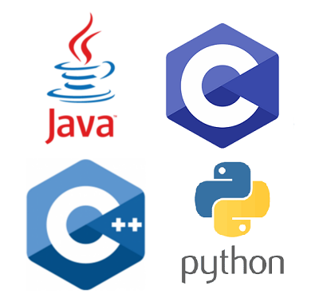
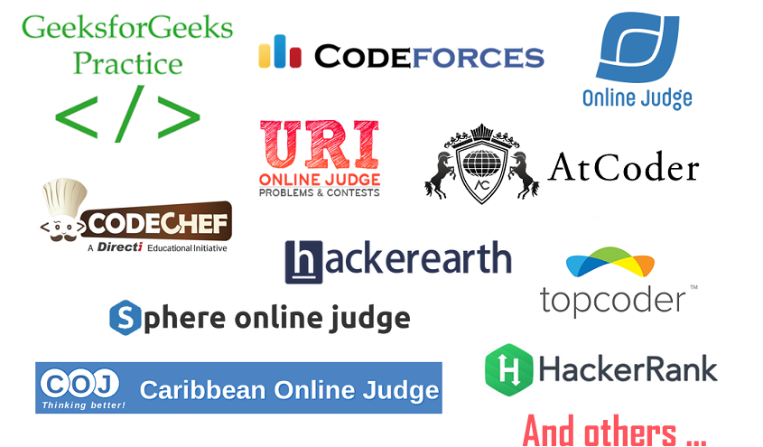

Bienvenidos ;)
Les presentamos información sobre el grupo de estudio y la
El Grupo de estudio de Programación Competitiva de la Universidad Nacional Mayor de San Marcos (GPC-UNMSM) está conformado por estudiantes y profesores de la UNMSM que buscan enseñar y reforzar los conocimientos del Análisis y Diseño de Algoritmos con el objetivo de participar en torneos de programación a nivel local, nacional e internacional.
Los integrantes son:
lista actualizada
Son competencias donde se mide las habilidades de programación y algoritmia de los participantes para resolver un conjunto de problemas lógicos y matemáticos.
La más importante es la competencia ICPC (International Collegiate Programming Contest) auspiciada por la asociación ACM-IEEE, que se realiza anualmente alrededor del mundo (3.233 universidades en 110 países de los 6 continentes).
~ Equipos de 3 personas.
~ 1 computador por equipo.
~ Conjuntos de entre 9 y 13 problemas.
~ 5 horas de competencia.
~ Gana el equipo que resuelve más problemas en menos tiempo.
~ Cada equipo cuenta con un coach que puede ser profesor o estudiante.
En una competencia de programación se califica la capacidad de resolver problemas correctamente, y la rapidez para hacerlo.
El puntaje de un equipo consta de dos números: El número de problemas resueltos y la suma de los tiempos, en minutos, en los cuales se resolvió cada problema.
Cada intento incorrecto penalizará al equipo con 20 minutos adicionales solo si al final el problema es resuelto.
Gana el equipo con más problemas resueltos en menos tiempo.
NO - WRONG ANSWER
NO - COMPILATION ERROR
NO - RUNTIME ERROR
NO - PRESENTATION ERROR
NO - TIME LIMIT EXCEEDED
YES - ACCEPTED
~ Proyección académica y profesional.
~ Desarrollo de competencias como resolución de problemas computacionales, lógica de programación y optimización de código.
~ Habilidades en análisis, diseño e implementación de soluciones algorítmicas.
~ Habilidades en el manejo de estructuras de datos.
~ Fortalecimiento de habilidades blandas como trabajo en equipo, comunicación y liderazgo.
~ Conocer, compartir y competir con más personas de dentro y fuera del país.
~ Retos y superación intelectual y personal.
~ Fortalecimiento del nivel de lectura y comprensión en inglés.
~ Oportunidades laborales y de pasantías con grandes empresas como Google, Facebook, Microsoft y demás.
~ Viajes y muchas experiencias.
Lenguajes de Programación
Online IDE's
GeeksforGeeks https://ide.geeksforgeeks.org/
Ideone https://ideone.com/
Rextester https://rextester.com/l/cpp_online_compiler_gcc
Codeforces https://codeforces.com/problemset/customtest
CodeChef https://www.codechef.com/ide
Coding Blocks IDE https://ide.codingblocks.com/
CSAcademy IDE https://csacademy.com/workspace/
HackerRank IDE https://www.hackerrank.com/challenges/solve-me-first/problem
Para practicar y fortalecer sus habilidades pueden elegir los siguientes sitios web, son totalmente gratuitos.

ACM ICPC
Para poder participar en las competencias oficiales de ICPC debes cumplir con por lo menos uno de los siguientes requisitos:
~ Haber iniciado los estudios Universitarios en los últimos 4 años.
~ Tener a la fecha no más de 23 años.
~ Llevar máximo 8 semestres en la carrera.
~ Introducción a la Programación Competitiva.
~ Paradigmas de programación.
~ Estructuras de datos.
~ Análisis de complejidad algorítmica.
~ Notaciones asintóticas (O, Ω, θ).
~ Algoritmos de Ordenación.
~ Análisis de Algoritmos sobre Grafos y redes de flujo.
~ Algoritmos Voraces.
~ Estrategía División y Conquista.
~ Programación Dinámica.
~ Algoritmos de retroceso.
~ Matemáticas y todos sus derivados.
~ Geometría computacional.
~ Algoritmos sobre strings.
Este llamado es a todos aquellos estudiantes de la UNMSM que se sientan a gusto compitiendo, que les guste el trabajo en equipo, que sientan gusto por la programación y los algoritmos, que quieran retarse a sí mismos y llevar sus capacidades al límite, todos aquellos que quieran ampliar sus conocimientos y que quieran competir con los mejores de la universidad, del país y ¿por qué no? del mundo.
Y sobre todo: tener la disciplina para entrenar
¡El resto lo trabajamos juntos! :)
Únete a nuestro fanpage en Facebook. Ahí informaremos sobre los eventos a realizar, compartiremos material de estudio, y resolveremos inquietudes entre todos.
Los estudiantes de la UNMSM que quieran participar del curso virtual deberán loguearse con su cuenta institucional @unmsm.edu.pe y completar el formulario.
GPC-UNMSM | gpcunmsm@gmail.com | 2020-Actualidad